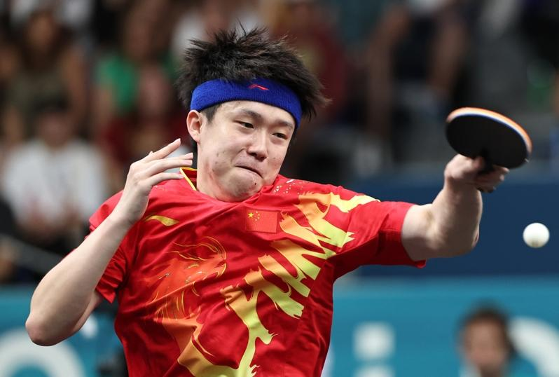

巴黎奥运6日的男子乒乓球团体16强赛，中国队毫无意外战胜印度队晋级8强。早前因在男单赛淘汰的中国选手王楚钦再度被问到「断拍意外」。
世界排名第一的王楚钦7月31日在男单赛32强爆冷淘汰，当天他在混双夺金后球拍被采访的摄影诗踩坏，持备用拍子上阵。王楚钦赛后表示，球拍被踩坏，心情受到一定影响，但绝非输球的理由。
自从2008年北京奥运以来，中国连续4届奥运在桌球男单包办金、银牌，随着王楚钦爆冷出局，这项战绩将就此止步。
澎湃新闻报导，王楚钦6日再度回应球拍事件，他说自己是受害者，「怎么说这个事情呢，我不想讨论。」在男团比赛备战中，王楚钦在训练时特意拿出了两副球拍，交替进行攻防练习。
王楚钦说，此前男子单打比赛意外出局后，自己在心态方面做了调整，「心态和思想都尽力捋顺，忘掉之前的比赛，只关注现在的团体赛。」他说。
中国男团将在八强赛中对阵南韩队，王楚钦说，对手的实力非常强，中国队会做好应对困难和挑战的准备。
巴黎奥运热话题
- 乒乓／台湾男团不敌日本止步8强 庄智渊奥运之旅结束
- 法撑竿跳选手下体打落横杆出局 引来色情网站开价
- 全红婵丑拖鞋、黄雨婷发夹卖翻 有商家2天接60万个订单
- 日本羽球女神红了 志田千阳被挖角进演艺圈
- 「美到像AI」匈牙利21岁女剑客脱下面罩惊艳全场